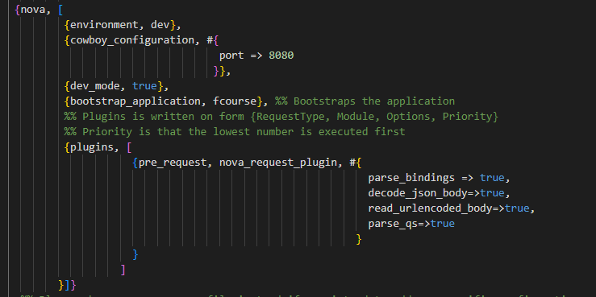
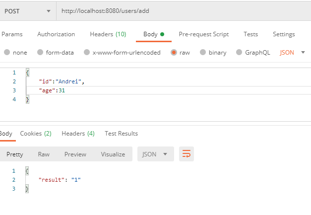
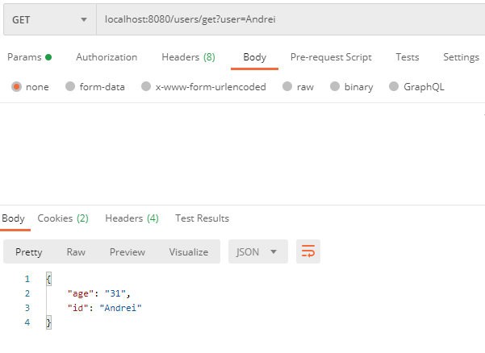

In this tutorial i will show you how to build an Erlang Web Api using Nova Framework and Redis as a data store.

This will be a simple web api supporting the following operations over a group of users.
- Create user
- Update user
- Delete user
- Get user by id
- Get all users
The repository containing the code as well as the tutorial can be found here
For those of you that have already installed the prerequisites which are : Erlang , Rebar,Nova **you can skip this part:
## Setup
- Install Redis on your computer and start the redis server using the command
redis-server - Installing Erlang: Setup | Adopting Erlang
- Installing Rebar3 Getting Started | Rebar3
- Install Nova Framework using this script:sh -c "$(sh -c "$(curl -fsSL https://raw.githubusercontent.com/novaframework/ rebar3_nova/master/install.sh)")"
Create a new project in the terminal :
Run the following command:
rebar3 new nova fcourse
This tells rebar to create a new project named fcourse using the nova template.
First thing we are going to edit is the rebar.config file by adding the redis client library dependency like below:
# rebar.config
{deps, [
nova,
{flatlog, "0.1.2"},
{eredis,{git,"https://github.com/wooga/eredis.git",{branch,"master"}}}
]}.
Next
Add the eredis depedency in the src/fcourse.app.src file :
{application, fcourse,
[{description, "fcourse managed by Nova"},
{vsn, "0.1.0"},
{registered, []},
{mod, { fcourse_app, []}},
{included_applications, []},
{applications,
[
kernel,
stdlib,
nova,
eredis
]},
{env,[]},
{modules, []},
{maintainers, []},
{licenses, ["Apache 2.0"]},
{links, []}
]}.
dev_sys.config.src
Edit your config/dev_sys.config.src file in the plugins:pre_request so that you enable the below options:

In production nova will use the prod_sys.config.src so you will need to edit that file too like above.
Defining the routes:
In the router module the routes are defined as follows: {Path, {Controller_Name,Controller_Method}, #{methods =>[options, HTTPMethod]}
In the fcourse_router.erl which contains the routing logic add the specific CRUD methods like below:
# fcourse_router.erl
-module(fcourse_router).
-behaviour(nova_router).
-export([
routes/1
]).
%% The Environment-variable is defined in your sys.config in {nova, [{environment, Value}]}
routes(_Environment) ->
[#{prefix => "/users", # you cand add a prefix to your routes
security => false,
routes => [
{"/", { fcourse_main_controller, index}, #{methods => [options,get]}},
{"/add",{fcourse_main_controller,add},#{methods=>[post]}},
{"/update",{fcourse_main_controller,add},#{methods=>[update]}},
{"/delete",{fcourse_main_controller,delete},#{methods=>[delete]}},
{"/get",{fcourse_main_controller,get},#{methods=>[get]}},
{"/getall",{fcourse_main_controller,getall},#{methods=>[get]}},
{"/assets/[...]", "assets"}
]
}].
# Implementing the CRUD endpoints:
We will write the logic for the CRUD endpoints in the controller which is controllers/fcourse_main_controller.erl file.
Adding the endpoint methods definition:
-export([get/1,
getall/1,
add/1,
delete/1,
update/1]).
We start by exporting the CRUD methods in our controller module. Each method has an arity of 1 that means it receives only one argument.
We then start implementing all the above methods:
ENDPOINT: Add
add(#{json := #{<<"id">> := Id , <<"age">> := Age}})->
try
{ok,Port}=eredis:start_link(),
{ok,Result}=eredis:q(Port,["hset","users"|[Id,Age]]),
{json,200,#{},#{<<"result">> => Result}}
catch
Error:Cause -> {json,500,#{<<"Content-Type">> => <<"json">>},#{<<"error">> =>Error , <<"cause">> => Cause}}
end.
The argument is a map that holds a key json. The json key contains a json like the one below:
{
"id": SomeValue,
"age": SomeOtherValue
}
We are deconstructing the input argument and binding the values of the json like id and the age to variables (Id and Age) . We then use the bound variables in our logic:
{ok,Port}=eredis:start_link(),
{ok,Result}=eredis:q(Port,["hset","users"|[Id,Age]]),
{json,200,#{},#{<<"result">> => Result}}
- We are starting a connection to redis that will be stored in the
Portvariable. - We then issue the redis
HSETcommand , using thePortas the connection ,usersas the hash and[Id,Age]as the Key-Value. - We then return a json , a status code
200, and the json of the form:
{
"result":Result
}
So this is how we add items !
ENDPOINT: Get by Id
In the same file which is fcourse_main_controller define a new endpoint for fetching users by id
get(#{ bindings := #{<<"user">> := UserId}})->
try
{ok,Port}=eredis:start_link(),
case eredis:q(Port,["hget","users",UserId]) of
{ok,Result} ->{json,200,#{},#{<<"UserId">> => list_to_binary(UserId) , <<"value">> => Result}};
_ -> {status,404}
end
catch
Error:Cause -> {json,500,#{},#{<<"error">> =>Error , <<"cause">> => Cause}}
end.
Instead of a json we receive a query string , for example /users/get?user=13
We could add other variables in the query string separated by comma e.g:
#{ bindings := #{<<"user">> := UserId , <<"age">> := Age}}
This would translate to : users/get?user=UserId&age=Age
- we start a connection to redis
- we use the redis command
HGET, which fetches the keyUserIdfrom the hashusersand treat its result with acaseclause specific to erlang
case eredis:q(Port,["hget","users",UserId]) of
{ok,Result} ->{json,200,#{},#{<<"UserId">> => list_to_binary(UserId) , <<"value">> => Result}};
_ -> {status,404}
end
- If result of eredis
HGETcommand is of the form{ok,Result}we return a json with the statuscode200and the json{ "UserId": UserId , "value" : Result }, and we also uselist_to_binaryto transform the value in a binary . - If the result is anything else (
_means wildcard , we don't care) ,we return a status code of404
Everything is in a try-catch clause in case connection to redis fails in which case we can pattern match on the Error:Cause and return a json with the status code 500 and the said Error,Cause
ENDPOINT: Get All
getall(_Request)->
try
{ok,Port}=eredis:start_link(),
{ok,Result}=eredis:q(Port,["hgetall","users"]),
io:format("List: ~p",[Result]),
TupleList=split(Result),
io:format("Formatted : ~p",[TupleList]),
{json,200,#{},#{<<"users">> => TupleList}}
catch
Error:Cause -> {json,500,#{},#{ <<"error">> => Error , <<"cause">> => Cause}}
end.
We run the redis command HGETALL on the users key, which is a hashset and we receive a result of the form:
[Key1,Value1,Key2,Value2.....]
We want to return a list of key values so we will use these two helper methods:
Helper methods:
# first method
# checks if argument is list and then if the list is odd , nr of keys has to be equal to those of values
split(List) when is_list(List) ->
case length(List) rem 2 of
0 -> split(List,[]); #calls the second method
1 -> throw(odd_list)
end.
#second method
split([],Accu)->Accu;
split([Key,Value|Rest],Accu)->split(Rest,[#{Key=> Value}|Accu]).
The second method is a tailrecursive one.
split([],Accu)->Accu;
The first clause is the stop condition, when the first argument is the [] which means an empty list,therefore, we return the second argument , the accumulator (Accu).
split([Key,Value|Rest],Accu)->split(Rest,[#{Key=> Value}|Accu]).
The second clause decomposes the first argument in [Key,Value | Rest] basically extracting 2 elements at a time from the original list , and calling itself again with Rest as the new starting list , and the map #{Key => Value} appended on top of the Accumulator.
ENDPOINT: Delete
delete(#{bindings := #{<<"id">> :=Id}})->
try
{ok,Port}=eredis:start_link(),
{ok,_}=eredis:q(Port,["hdel","users",Id]),
{status,200}
catch
Error:Clause ->{json,500,#{},#{<<"error">> => Error ,<<"cause">> => Clause}}
end.
Nothing special here , we again use bindings , meaning we get a query string and we want to extract the id of the record Id which we want to delete, eg: /users/delete?id=33
We start connection to redis , and then issue the redis command HDEL which deletes the key Id from the hash users.
When exception we return status 500 and the json { "error": Error ,"cause": Cause}
ENDPOINT: Update
In this endpoint we just want to update the age of the user.
update(#{json := #{<<"user">> := User , <<"new_age">> := NewAge}})->
try
{ok,Port}=eredis:start_link(),
case eredis:q(Port,["hget","users",User]) of
{ok,OldAge} -> {ok,_}=eredis:q(Port,["hset","users"|[User,NewAge]]),
{status,200};
_ ->{status,404}
end
catch
Error:Clause -> {status,500,#{},#{<<"error">> => Error ,<<"clause">> =>Clause}}
end.
We the HGET redis command like we did in the get-by-id endpoint.
If redis returns us the result {ok,OldAge} we then set the value of the key User within the users hash to value Age , and return status code 200.
Otherwise we return the status code 500 with the { "error": Error ,"cause": Cause} json.
Putting it all togeter in the controller module:
fcourse_main_controller
-module(fcourse_main_controller).
-export([get/1,
getall/1,
add/1,
delete/1,
update/1]).
split(List) when is_list(List) ->
case length(List) rem 2 of
0 -> split(List,[]);
1 -> throw(odd_list)
end.
split([],Accu)->Accu;
split([Key,Value|Rest],Accu)->split(Rest,[#{Key => Value}|Accu]).
get(#{ bindings := #{<<"user">> := UserId}})->
try
{ok,Port}=eredis:start_link(),
case eredis:q(Port,["hget","users",UserId]) of
{ok,Result} ->{json,200,#{},#{<<"UserId">> => list_to_binary(UserId) , <<"value">> => Result}};
_ -> {status,404}
end
catch
Error:Cause -> {json,500,#{<<"Authorization">> => <<"Basic 1212121">>, <<"Content-Type">> => <<"json">>},#{<<"error">> =>Error , <<"cause">> => Cause}}
end.
getall(_Request)->
try
{ok,Port}=eredis:start_link(),
{ok,Result}=eredis:q(Port,["hgetall","users"]),
io:format("List: ~p",[Result]),
TupleList=split(Result),
io:format("Formatted : ~p",[TupleList]),
{json,200,#{},#{<<"users">> => TupleList}}
catch
Error:Cause -> {json,500,#{},#{ <<"error">> => Error , <<"cause">> => Cause}}
end.
add(#{json := #{<<"id">> := Id , <<"age">> := Age}})->
try
{ok,Port}=eredis:start_link(),
{ok,Result}=eredis:q(Port,["hset","users"|[Id,Age]]),
{json,200,#{},#{<<"result">> => Result}}
catch
Error:Cause -> {json,500,#{<<"Content-Type">> => <<"json">>},#{<<"error">> =>Error , <<"cause">> => Cause}}
end.
delete(#{bindings := #{<<"id">> :=Id}})->
try
{ok,Port}=eredis:start_link(),
{ok,_}=eredis:q(Port,["hdel","users",Id]),
{status,200}
catch
Error:Clause ->{json,500,#{},#{<<"error">> => Error ,<<"cause">> => Clause}}
end.
update(#{json := #{<<"user">> := User , <<"new_age">> := NewAge}})->
try
{ok,Port}=eredis:start_link(),
case eredis:q(Port,["hget","users",User]) of
{ok,OldAge} -> {ok,_}=eredis:q(Port,["hset","users"|[User,NewAge]]),
{status,200};
_ ->{status,404}
end
catch
Error:Clause -> {status,500,#{},#{<<"error">> => Error ,<<"clause">> =>Clause}}
end.
Testing it:
In order for this to work you need to have redis-server installed on your computer and run the command redis-server in order to start the server to accept commands from our Nova API.
Run the application
From the root folder of the application run the command : rebar3 nova serve , wait till all applications are booted ( wait till you get the blow output in the terminal ) :


Once the application is built , we have finished ! Voila !
The application can be tested via postman like below:
Adding a user

Fetching a user

A step by step video implementation will also follow soon, stay tuned !